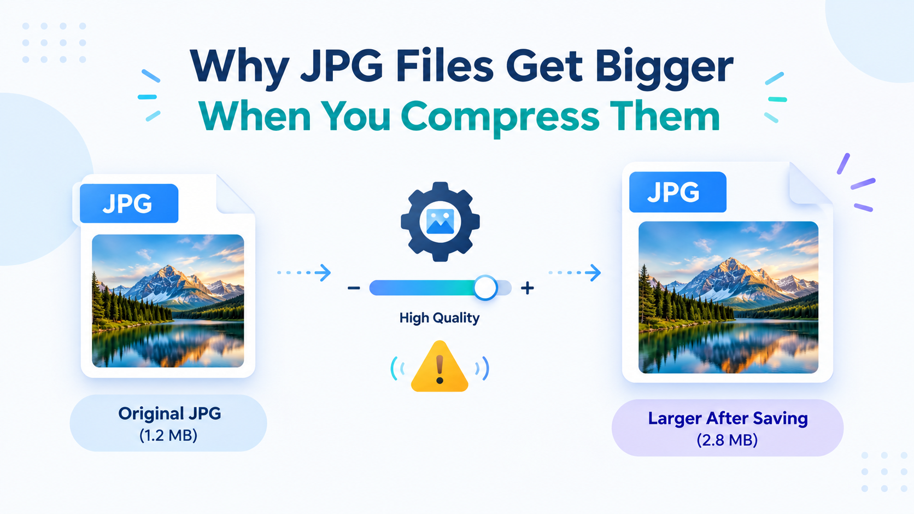
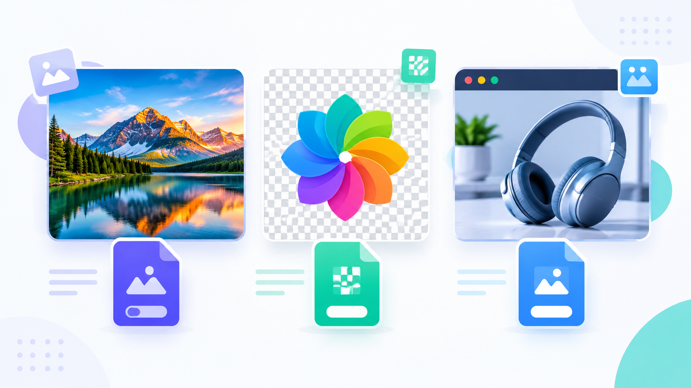
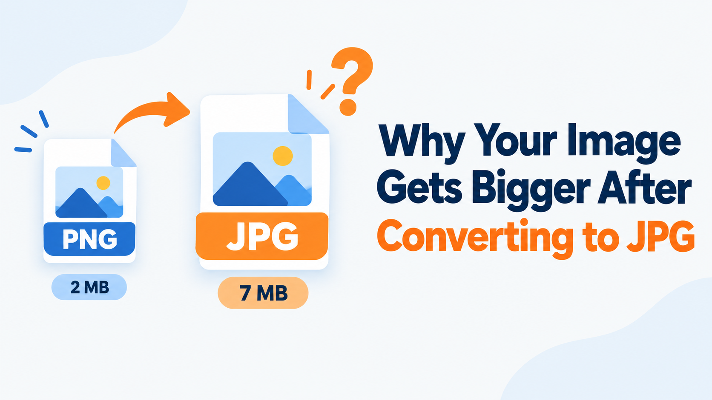

Why JPG Files Get Bigger When You Compress Them
Learn why JPEG compression can sometimes increase file size and how to avoid this issue.
7 min
Read
Welcome to the QuickToolsPK blog, your resource for practical guides on image optimization, PDF management, and everyday file tasks. Whether you need to reduce an image's file size, choose the right image format, resize a photo for a website, or organize PDF documents, our guides explain the process in clear, simple steps.
Explore useful tips, learn about common file formats, and discover ways to prepare digital files for sharing, websites, and everyday work. Each guide is designed to help you understand your options and choose the right tool for the task.
Start here if you are new to file optimization.
A practical walkthrough of choosing the right quality level, comparing formats, and avoiding the common mistakes that make photos look worse after compression.
Browse by category or search above.

Learn why JPEG compression can sometimes increase file size and how to avoid this issue.

A plain-language comparison of the three formats most people encounter, with guidance on when each one makes sense.

Discover the hidden reasons why saving a PNG as a JPG can unexpectedly increase the file size.

Learn how a visually small image can carry a massive file size and ruin your website's performance.

Fix low-quality image exports from your PDF files with these simple adjustment settings.

Don't just hit compress. Find out exactly what is making your PDF huge before you ruin its quality.

Cut through the technical jargon and learn which modern image format you should actually use.

A step-by-step workflow for completely restructuring a messy PDF document from scratch.

Protect your sensitive information before using free online tools to edit or convert your documents.

The surprising truth about how resolution, compression, and metadata interact when you resize.

Stop struggling with iPhone photos on your PC. Here is exactly how to open and convert HEIC files.

Learn the fastest, safest way to delete a single unwanted page without messing up your document structure.
Try a different keyword or select another category.